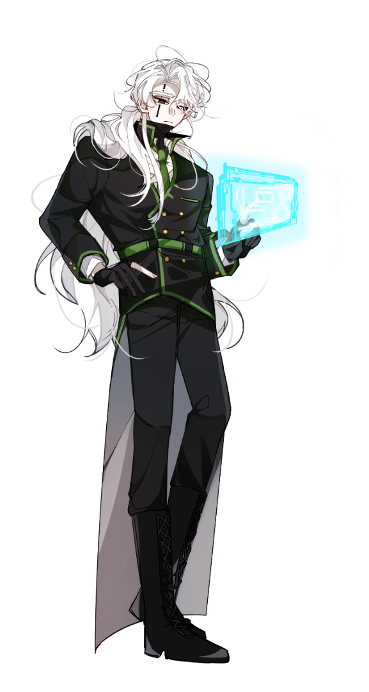

TS·OS
SECURE LINK
TS·OS
SECURE LINK
82%
--:--
SECTOR 01제1지부 · HEADQUARTER6 REC
SECTOR 02서브쿼터 · SUBQUARTEROFFLINE
SECTOR 03메갈로폴리스 · MEGALOPOLISOFFLINE
SECTOR 04아우터사이클 · OUTERCYCLEOFFLINE
SECTOR 05베른 · BARRENOFFLINE
ETC무소속 · UNAFFILIATEDOFFLINE
